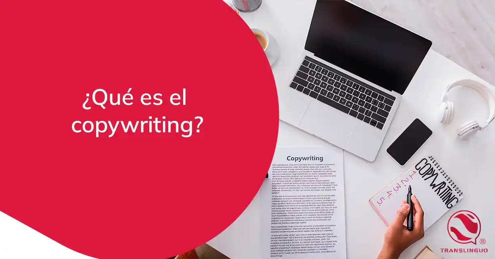
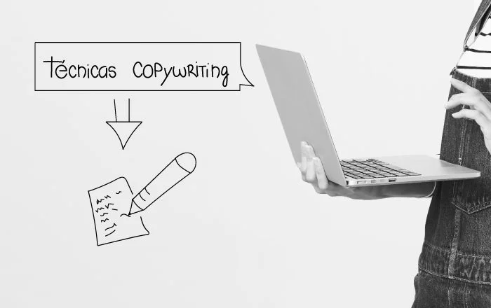
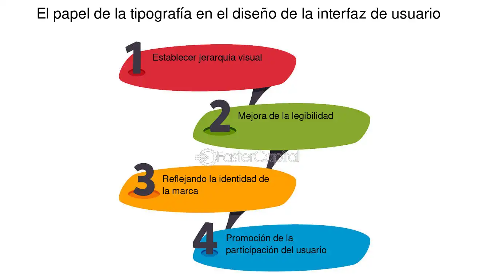
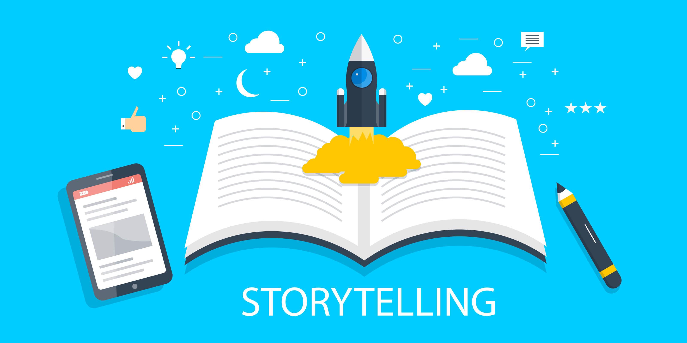

¿Qué es el Copywriting y por qué es importante en el diseño web?
El copywriting es una gran herramienta de marketing online que puede ayudar a conseguir un mayor número de clientes potenciales. Su objetivo principal es despertar emociones, captar la atención y convertir esa conexión emocional en una acción, ya sea comprar un producto, rellenar un formulario o compartir un contenido.
¿Cuál es la diferencia entre Copywritingy UX writing?

En el copywriting reina el ingenio y la creatividad para que los mensajes resulten lo más atractivos posible. Por otro lado, en el UX Writing se busca la concisión, la utilidad y la claridad en los mensajes para que un producto digital sea fácil de usar.
¿Cómo influye el tono y la voz de la marca en el copy de una página web?
si tu marca tiene un tono de voz divertido y juvenil, atraerá a una audiencia que busque contenido creativo y de entretenimiento. Por otro lado, si el tono de voz de la marca es más serio y profesional, atraerá a una audiencia que busque información clara y concisa.
¿Qué técnicas de Copywriting pueden mejorar la conversión en una web?

- Practicar de forma constante:mientras más escribes, mejor lo haces, aunque muchas veces no te des cuenta. Convertir el copywriting en un hábito te ayudará a notar errores comunes, crear tus propios trucos y, en general, a que la redacción te resulte más fácil.
- Entender al público:como ya sabes, el copywriting trata de motivar una acción, y para eso es necesario investigar qué es lo que mueve a las personas que van a leerlo. Por ejemplo, los intereses de una mujer casada y con tres hijos no serán los mismos que los de una soltera y sin hijos. Comprender esas diferencias es clave para apelar a sus emociones y poder generar resultados.
- Definir la intención del mensaje:así como es importante saber a quién le escribes, también es clave saber por qué escribes. Define con el mayor detalle posible lo que buscas lograr con tus textos, cómo quieres que se sienta el lector y cómo esperas que te perciba a través de las palabras. Con esto en mente, te resultará más fácil redactar un copy eficaz que responda a tu objetivo.
- Hacer pruebas A/B:pon a prueba dos versiones de copy para un mismo producto o servicio y evalúa los resultados que obtienes con cada una. ¿Cuál genera más clics? ¿Cuál te reporta más conversiones? Muchas veces nos dejamos llevar por nuestros sesgos, pero no hay que olvidar que es el público objetivo quien tiene la última palabra.
¿Cómo se equilibra el texto con el diseño visual para mejorar la experiencia del usuario?
La tipografía abarca no sólo la elección de los tipos de letra, sino también su disposición y presentación. Una tipografía adecuada puede reforzar la identidad de la marca y mejorar la experiencia del usuario. Las consideraciones clave incluyen el emparejamiento de fuentes, que implica seleccionar fuentes que se complementen entre sí, y establecer una jerarquía tipográfica utilizando distintos tamaños, pesos y estilos para guiar a los usuarios a través del contenido. La legibilidad es primordial; las fuentes sans-serif suelen ser las preferidas para las interfaces digitales por su claridad. Además, el interlineado y el espaciado entre letras pueden afectar significativamente a la legibilidad, sobre todo en pantallas pequeñas.
¿Cuáles son los errores más comunes en el copy de una página web y cómo evitarlos?

- No tener llamadas a la acción bien definidas.
- Falta de contenido que acompañe las etapas de conversión.
- No aprovechar al máximo los testimonios.
- Contenido sin relevancia local.
- No hablar de precios.
- No adaptar el lenguaje al público.
- Enfocar tu discurso a todo el mundo.
¿Cómo se puede optimizar el copy para mejorar el SEO sin sacrificar la claridad del mensaje?

- Encuentra las Palabras Clave Adecuadas.
- Encuentra las Preguntas que Hacen los Usuarios.
- Identifica la Intención de Búsqueda de tu Audiencia.
- Comprueba los Artículos de la Competencia para tus Palabras Clave Objetivo.
- Crea Activos Enlazables.
¿Qué papel juega el storytelling en el Copywriting web?
Facilita la memorización del mensaje. Una historia bien contada puede hacer que el mensaje principal de la marca permanezca en la memoria del usuario, lo que aumenta la probabilidad de que vuelva a interactuar con la marca en el futuro.
¿Cómo adaptar el copy a diferentes formatos y dispositivos (móvil, desktop, etc.)?

- La primera idea es decidir si se desea crear un nuevo proyecto para cada sitio web, hecho que optimizará mucho más la navegación desde los dispositivos móviles, aunque también conllevará mucho más trabajo, o bien si se utiliza lo que se conoce como Responsive Design. Esto consiste en adaptar el formato de la página web actual a los distintos tipos de pantalla. Dicho de otra manera, adaptar la web a móviles.
- Url: en este punto nos tocará decidir si hacemos uso de la misma estructura para todos los formatos de webs (aconsejada por Google y más óptima para el SEO) o si utilizan url diferentes (con dominios o subdominios).
- Adaptar el código a los dispositivos móviles. Aunque evoluciona a pasos agigantados, este tipo de dispositivo todavía es más lento que los ordenadores, por eso debemos optimizar el código de nuestro sitio web y hacerlo más eficiente. Reducir el tamaño, evitar el uso de estilos inline o evitar por todos los medios el flash son algunos de los requisitos que debemos cumplir.
- Usabilidad. Si nuestra navegación no es utilizable, perderemos a los usuarios de dispositivos móviles en pocos minutos. Debido a esto, se trata de uno de los puntos más importantes.
¿Cuáles son las herramientas y recursos mas útiles para mejorar el Copywriting en diseño web?

- Edit Website Extension: encuentra clientes.
- Mide tu tiempo
- Notion: organización total.
- Copyscape: detecta el plagio.
- Canva: diseña fácil y rápido.
- Metricool: gestiona las redes sociales.
- Google Drive: todo en uno.
- Google Calendar: organiza tu tiempo.